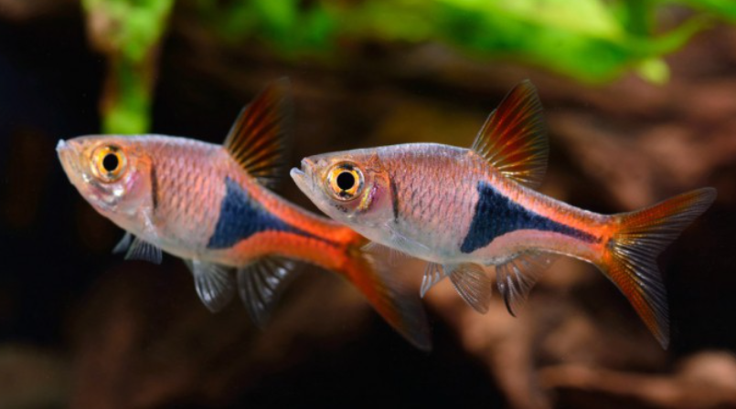
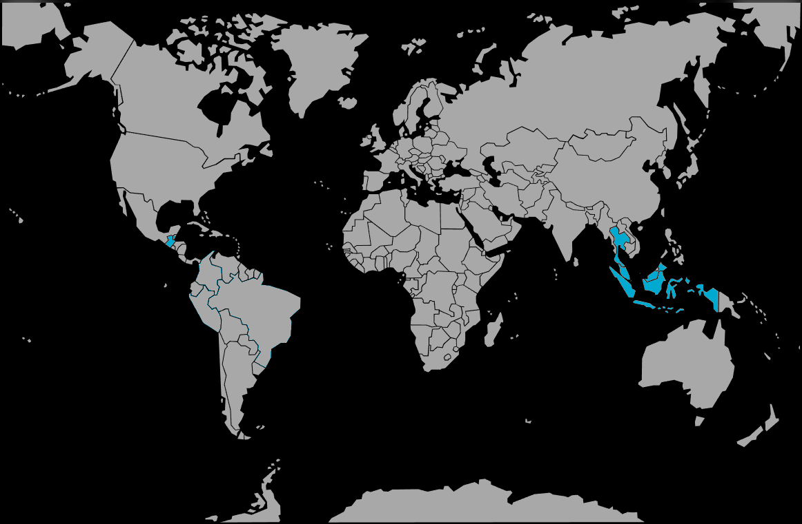

Systématique
- Ordre : Cypriniformes
- Famille : Danionidae
- Genre : Trigonostigma
- Espèce : T. heteromorpha

Trigonostigma heteromorpha, communément appelé Rasbora arlequin, est l'un des poissons d'aquarium les plus populaires et les plus emblématiques d'Asie du Sud-Est.
C'est une petite espèce au corps haut et comprimé latéralement, mesurant généralement entre 3,5 et 4,5 cm. Il se distingue immédiatement par sa coloration rose cuivré à rouge orangé et surtout par la grande tache noire triangulaire en forme de coin située sur la moitié postérieure de ses flancs. Cette marque s'étend du milieu du corps jusqu'au pédoncule caudal.
Robuste et paisible, c'est un excellent poisson de banc, idéal pour les aquariums communautaires plantés de type asiatique.
C'est un poisson grégaire strict qui doit impérativement être maintenu en groupe (banc) d'au moins 8 à 10 individus pour se sentir en sécurité et afficher un comportement naturel. S'il est seul ou en trop petit nombre, il devient timide, terne et stressé.
Il occupe principalement la zone médiane et supérieure de l'aquarium. Très paisible et actif, il cohabite parfaitement avec d'autres espèces calmes (Gouramis, petits Barbus, Kuhlis).
Mode : ovipare.
Sa méthode de ponte est particulière : contrairement à beaucoup de Cyprinidés qui dispersent leurs œufs, le couple nage à l'envers pour coller les œufs adhésifs sous la face inférieure des feuilles de plantes à larges feuilles (comme les Cryptocoryne ou les Microsorum).
La reproduction nécessite une eau très douce et acide (pH 5,5 - 6,0) et une lumière tamisée.
Dimorphisme sexuel : Subtil. La femelle est généralement plus ronde et un peu plus grande que le mâle. Le bord inférieur de la tache triangulaire noire est souvent droit chez la femelle, alors qu'il est légèrement arrondi ou étiré vers le bas chez le mâle.
Espérance de vie : Environ 3 à 5 ans en captivité.
Il est originaire d'Asie du Sud-Est. Il habite les ruisseaux forestiers et les marécages tourbeux, souvent dans des eaux noires ("blackwater") teintées par la décomposition végétale, douces et acides, ombragées par la canopée.
Répartition

Origine naturelle :
- Thaïlande (Sud).
- Malaisie péninsulaire.
- Singapour.
- Indonésie (Sumatra).
Paramètres de maintenance
Température : 23 à 28 °C.
pH : 5,0 à 7,5 (préfère une eau légèrement acide, pH 6,0-6,5 idéal).
GH : 2 à 12 °dGH (eau douce à moyennement dure).
Courant : Faible à modéré.
Volume conseillé : Minimum 60 à 80 L (soit environ 60-80 cm de façade) pour permettre la nage d'un groupe d'une dizaine d'individus.
Régime alimentaire
Régime : omnivore à tendance insectivore.
Dans la nature, il se nourrit de petits insectes, de vers et de crustacés zooplanctoniques.
En aquarium, il n'est pas difficile : paillettes, petits granulés, et idéalement des compléments vivants ou congelés (daphnies, artémias, cyclops) pour raviver ses couleurs.